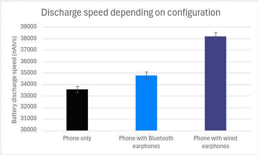
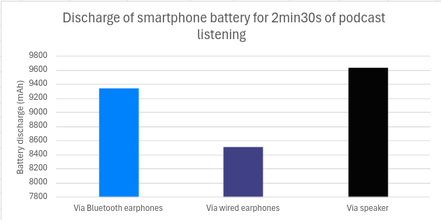
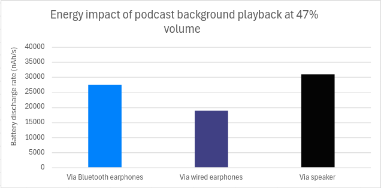
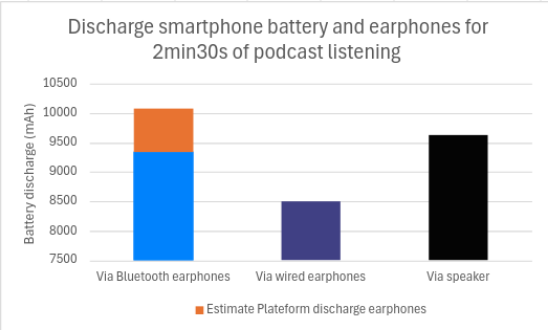
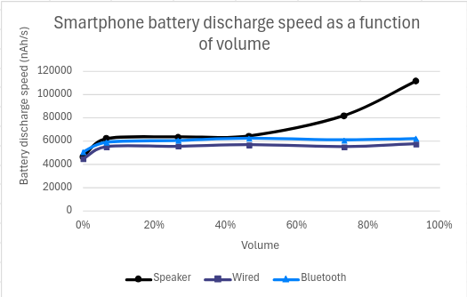
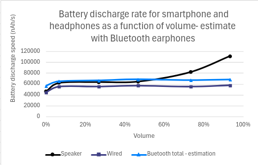

Introduction
« The batteries in my Walkman are dead!”
Such a commonplace phrase in the mouth of a teenager in the 90s would seem totally ludicrous to us today.
Technologies have changed, but the problems remain the same:
- “I’ve got to charge my phone »
- “I need to plug in my computer”
- “I hope there’s a plug on the train”
Energy is essential to keep our technologies running.
Without energy, there’s no sound!
But do you know which listening mode consumes the least energy, so you can enjoy your audio content for longer?
Lower energy consumption also means fewer charges/discharges of batteries, and therefore longer battery life. In this case, greater autonomy means less impact on the environment.
In this article, we propose to answer this question by measuring the energy consumption of 3 listening modes:
- Phone speaker sound
- Wired earphone sound
- Sound with Bluetooth earphone
Methodology
Measurement context
- Samsung Galaxy S10, Android 12
- Network: Wi-Fi
- Brightness: 50 %
- Tests carried out over a minimum of 3 iterations to ensure reliability of results
Selected earphones
- Phone speaker, Galaxy S10
- Wired earphones: SAMSUNG Jack 3.5 In-ear EOIG955
- Bluetooth earphones: Soundcore Life P2
Please note that power consumption is measured on the phone battery only, and not on the Bluetooth headset battery. Both the smartphone and the earphones are Bluetooth 5.0 compatible.
Impact of connecting earphones
In this first part, we’re just going to look at the impact of having earphones plugged into our phone, without using them.
Measurement context
- Three configurations:
- The smartphone
- The smartphone with Bluetooth earphone
- The smartphone with wired earphone
- On-screen elements: wallpaper (black image).
- Measurement duration: 30 seconds.
Results

Here we can see that connecting earphones, whether Bluetooth or wired, does have an impact on the smartphone’s battery. This additional discharge is 4% for Bluetooth earphones and 14% for wired ones.
So, with a full battery on our Galaxy S10, with a capacity of 3,400 mAh, the phone will take around 28 h to discharge completely. With Bluetooth earphones, we lose 1 h of autonomy, compared with almost 3h30min with wired earphones.
To optimize your smartphone’s battery life, it’s a good idea to unplug the earphones when not in use.
Impact of listening at mid-power
Measurement context
- Application: Radio France
- Podcast : cloud souverain
- Listening time: 2min30s
- Listening volume: 47% (7/15)
- On-screen elements: wallpaper (black image)
Results

We can see that listening via wired earphones is the one that will discharge the battery the least.
Save 1.5 hours of listening time by using wired earphones instead of Bluetooth!
If we take our phone with a full battery, we’ll be able to listen for over 16h30min with our wired earphones, compared with 15 h with Bluetooth earphones and 14h40min with the speakerphone.
If we deduct the basic energy consumption of the terminal (without playback, but with earphones plugged in or not, depending on the scenario) from our consumption with playback, we can estimate the energy impact of background playback at average volume.

The same results can be observed: listening at medium volume will have the greatest energy impact via speakerphones, and the least impact via wired earphones.
A quick look at Bluetooth earphones
The Bluetooth earphones we use have 55 mAh batteries, which the manufacturer claims will provide 5 h of continuous playback (varying according to volume level and content). This gives an average discharge rate of just over 3,000 nAh/s per earphone. Assuming that this value is obtained for an average listening volume, we can add to it.

The results then change: listening at average volume will have a greater impact on energy consumption via Bluetooth earphones than via the loudspeaker. Please note that these results are only estimates, based on assumptions.
Impact of listening volume
We were able to vary the listening volume to see the impact on the smartphone’s power consumption.
Listening volume tested: 0%, 7%, 27%, 47%, 73% and 93%.

It can be seen that with both Bluetooth and wired earphones, the discharge rate remains constant regardless of volume, as long as the earphones are in use (i.e. other than 0%). On the other hand, listening with the speaker at maximum volume consumes 72% more than listening at medium volume.
To maximize your smartphone’s battery life and minimize energy consumption, we recommend using wired earphones.
A quick look at Bluetooth earphones
If we assume that our Bluetooth earphones consume the same amount of energy regardless of volume, we get the following results:

Here, we can see that below average volume, listening via Bluetooth earphones will consume more energy than the speaker. This trend is reversed at higher volumes. Please note that these results are only estimates, based on assumptions.
Conclusion
Now you know which is the best way to ensure maximum autonomy and battery life: with wired earphones, unplugged when not in use.
There are currently no data on the environmental impact of manufacturing earphones, whether wired or Bluetooth, but we can advise you to keep the ones you have as long as possible. If they don’t work and can’t be repaired, then using wired earphones seems to be the best option, with no battery and a lower energy impact on your smartphone battery.
We therefore recommend you listen to these podcasts (with wired earphones, of course):
- Techologie : Matérialité du numérique et externalités minières
- L’Octet Vert : Loi de Moore et la loi d’erooM !
Source :